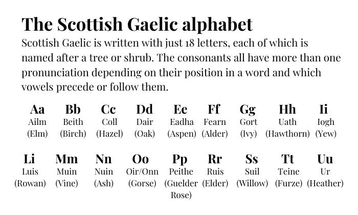
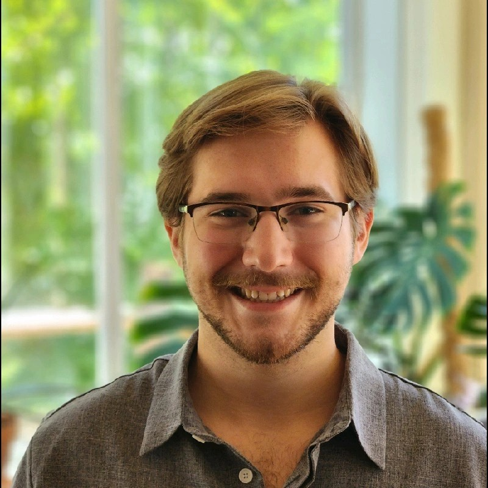
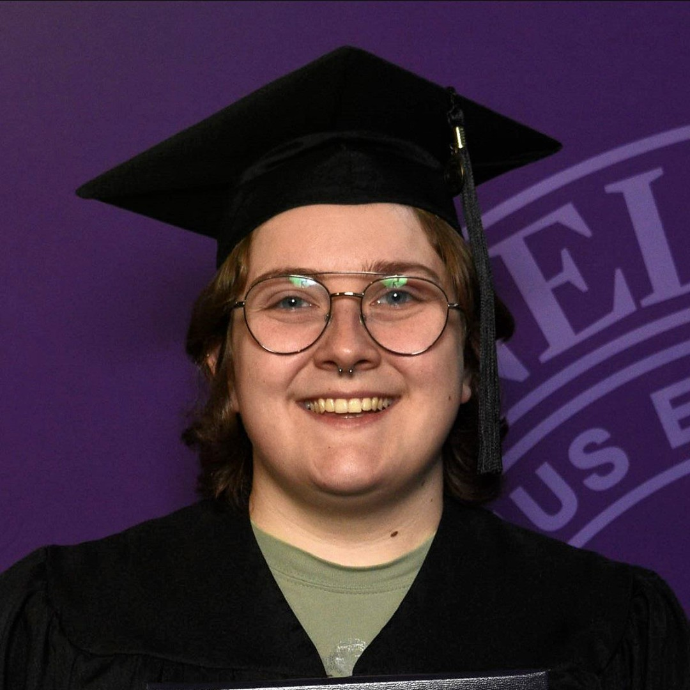
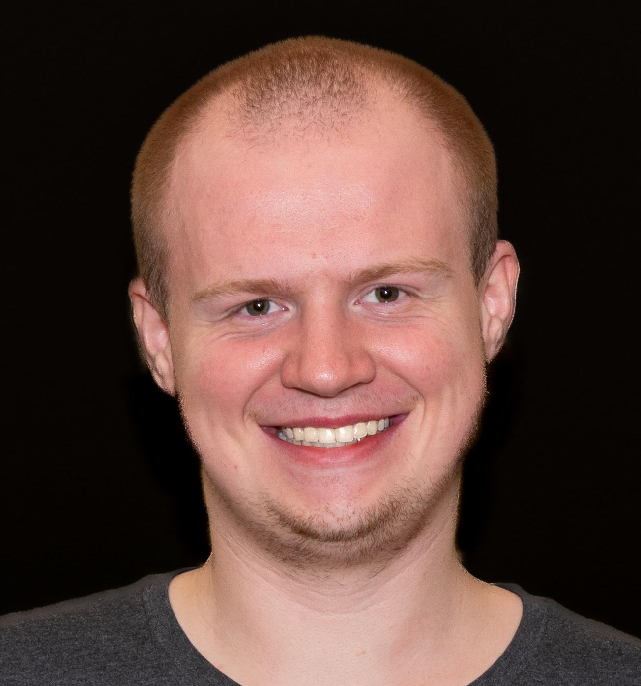
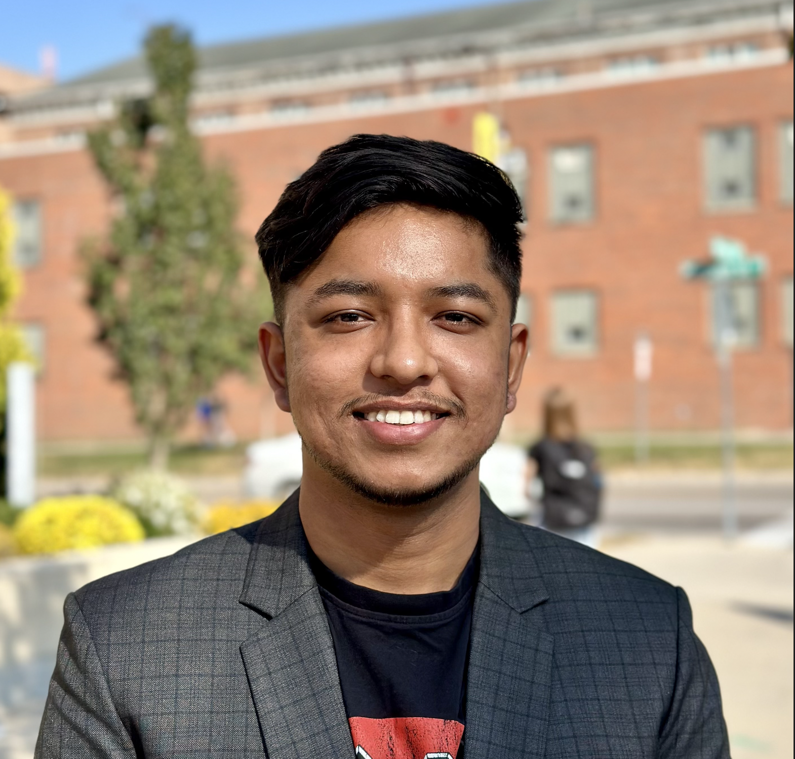
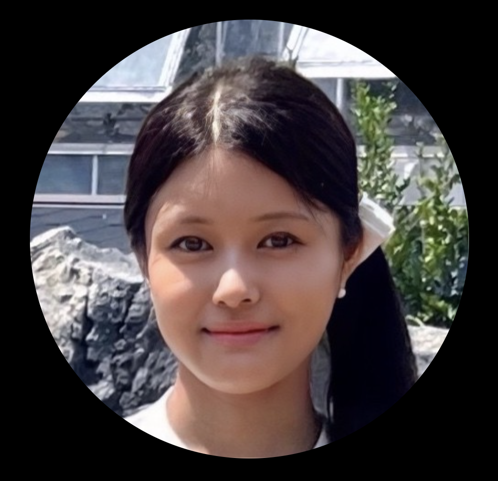

Project Overview
The Scottish Gaelic Research Project at Cornell College is an interdisciplinary initiative that bridges linguistics and computer science to support endangered language revitalization. Our team focuses on developing tools for automatic lemmatization, part-of-speech tagging, and morphological analysis tailored to the complexities of Scottish Gaelic. Unlike many mainstream NLP projects, we face the unique challenges of low-resource languages, which often lack large annotated corpora. By collaborating with native speakers and Gaelic scholars, we ensure that our models respect the linguistic and cultural integrity of the language. The project has become a hands-on platform for undergraduate research, contributing to both academic knowledge and practical digital tools for the Gaelic-speaking community.

Our current work includes designing a custom rule-based lemmatizer that handles affix stripping, prosthetic consonants, and Gaelic-specific grammatical structures. We also incorporate manual tagging and evaluation to refine our preprocessing rules, helping to increase accuracy and reduce bias in automated analyses. Students like Zack and Kaede are exploring advanced tasks such as corpus coverage assessment and syntactic parsing, enriching the project’s scope. Meanwhile, I am developing the Python codebase that brings all our components together — from preprocessing to lexicon integration and visualization. Altogether, this project exemplifies how small liberal arts colleges can contribute to globally significant work through focused, collaborative research.
Past Students' Contributions
The first phase of the Scottish Gaelic research project established the foundation for future development. Last year’s CSRI team compiled one of the first digital corpora for the language and built a web scraper and custom tokenizer.. These tools addressed Gaelic-specific challenges like lenition and compound word formation. The team contributed their work to spaCy and presented it at Napier University, strengthening cross-continental collaboration.
Mark Liberko
Mark played a central role in the creation of the custom tokenizer for Scottish Gaelic. He worked closely on designing tokenization rules that address Gaelic-specific challenges such as lenition and affixation. In addition to his work on tokenization, Mark collaborated with Sophie on the scraping pipeline and contributed to the integration of tools within the spaCy NLP framework.

Mark is a senior studying Data Science and Mathematics at Cornell College.
Sophie Brown
Sophie developed the original web scraper that collected and processed Gaelic language texts from a variety of sources. Their contribution ensured that the dataset was diverse and representative, which laid the foundation for building a reliable corpus. They also worked alongside Mark to implement scraping logic and pre-annotation filtering.

Sophie is a Cornell College Alum, who received a Mathematics degree with a Statistics Minor .
Current Students' Contributions
This year’s CSRI students are expanding the project’s scope by developing custom NLP tools and infrastructure for Scottish Gaelic. Their work includes building a rule-based lemmatizer, cleaning and enriching the corpus, and designing a Scottish Gaelic past-of-speech tagger. Together, they’re advancing the project’s accuracy, coverage, and accessibility.
Zack Orrick
Zack is focused on foundational work to clean and expand the Scottish Gaelic text corpus. He has written scripts in R to preprocess and tokenize raw text from various historical and contemporary sources, ensuring quality and consistency. His preprocessing pipeline helps reduce noise and makes the dataset more useful for downstream NLP applications.
A distinctive part of his work is building timelines that organize corpus material chronologically — helping the team analyze historical language evolution. He's also sourcing new Gaelic texts to enrich the diversity of the corpus.

Zack is a senior Data Science student at Cornell College.
Oskar Diyali
Oskar is leading development of a rule-based lemmatizer tailored for Scottish Gaelic using Python and spaCy. His pipeline accounts for Gaelic morphology: accent normalization, lenition, emphatic/prosthetic removal, and suffix transformation to derive base forms.
He's also built frequency analyses, irregular lemma dictionaries, and output evaluation systems. His goal is to expand rule coverage and launch a public-facing site to share findings and tools for Gaelic NLP.

Oskar is a junior studying Data Science & Computer Science at Cornell.
Kaede Saho
Kaede contributes to building a Gaelic Data Analytics API, working remotely with faculty at Cornell and Napier. She is designing a tool to identify Scottish Gaelic text — foundational for scaling linguistic analysis across our corpus. This detection tool is critical for applying rule-based lemmatization and syntactic tools reliably.
Using both rule-based and statistical methods, she builds classifiers and analyzes lexical and grammatical patterns, even without speaking Gaelic. Her work boosts accessibility for underrepresented languages and supports reproducible NLP workflows.

Kaede is a junior double-majoring in CS and Data Science.
Dr. Tyler George
Dr. George is an Assistant Professor of Statistics who teaches introductory and advanced statistics courses including Introduction to Time Series and Advanced Regression Analysis. His professional interests lie in data science, analytics, hypothesis testing, and statistics education. He holds a Ph.D. in Statistics and Analytics from Central Michigan University.
Dr. Ajit Chavan
Dr. Chavan is an Associate Professor of Computer Science at Cornell College. He teaches courses ranging from Data Structures and Algorithms to Computer Organization and Operating Systems. His research interests include parallel and distributed systems, big data applications, and machine learning infrastructure.
Dr. Peter Barclay
Dr. Barclay is a lecturer at Edinburgh Napier University, specializing in NLP and corpus linguistics. He has contributed to several digital humanities and computational linguistics projects, focusing particularly on low-resource languages like Scottish Gaelic. His work bridges linguistics and computer science in innovative ways.
Dr. Alistair Lawson
Dr. Lawson is a lecturer at Edinburgh Napier University with expertise in software engineering, machine learning, and digital tools for minority languages. He contributes to interdisciplinary research supporting Gaelic technology, educational systems, and student-led innovation in computational linguistics.
References & Acknowledgments
- Digital Archive of Scottish Gaelic (DASG) – Provided base texts and corpora used in training and evaluation.
- Edinburgh Napier University – Contributed linguistic expertise and POS tagging validation.
- spaCy – NLP framework used for lemmatizer integration and processing pipeline.
- Am Faclair Beag – Lexicon used for validating base forms and lemma consistency.
- Cornell College Faculty – Ongoing technical mentorship and research guidance from Dr. George and Dr. Chavan.